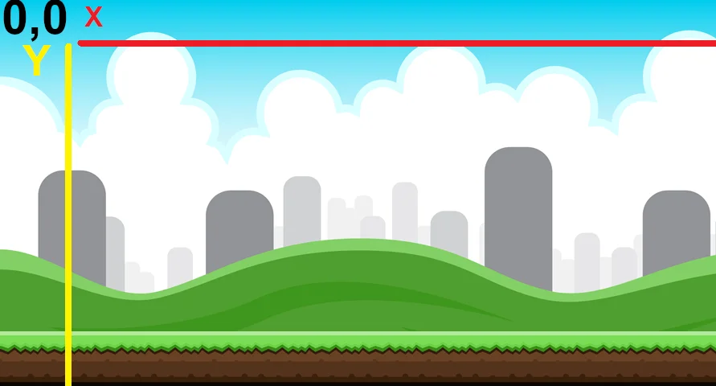
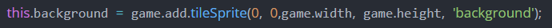

JavaScript es el lenguaje de programación encargado de dotar de mayor interactividad y dinamismo a las páginas web. Cuando JavaScript se ejecuta en el navegador, no necesita de un compilador. El navegador lee directamente el código, sin necesidad de terceros. Por tanto, se le reconoce como uno de los tres lenguajes nativos de la web junto a HTML (contenido y su estructura) y a CSS (diseño del contenido y su estructura).
No conviene confundir JavaScript con Java, que es un lenguaje de programación muy diferente. La confusión proviene del nombre, registrado por la misma empresa creadora de Java (Sun Microsystems). JavaScript (JS) se creó posteriormente, y la empresa norteamericana lo que hizo simplemente fue cambiar el nombre que le habían puesto sus creadores al comprar el proyecto (LiveScript). El lenguaje de programación Java está orientado a muchas más cosas que la web desde sus inicios.
Con este lenguaje de programación del lado del cliente (no en el servidor) podemos crear efectos y animaciones sin ninguna interacción, o respondiendo a eventos causados por el propio usuario tales como botones pulsados y modificaciones del DOM (document object model). Por tanto, nada tiene que ver con el lenguaje de programación Java, ya que su principal función es ayudar a crear páginas webs dinámicas.
El código de programación de JavaScript se ejecuta en los navegadores, ya sean de escritorio o móviles, ya sean Android o Iphone. Sirve para exactamente lo mismo, da igual en el tipo de dispositivo que se ejecute el navegador.
JavaScript es capaz de detectar errores en formularios, de crear bonitos sliders que se adapten a cualquier pantalla, de hacer cálculos matemáticos de forma eficiente, de modificar elementos de una página web de forma sencilla. Pero también JS es el encargado de que existan herramientas como Google Analytics, Google Tag Manager, Facebook Pixel y tantas otras, que son claros ejemplos de JavaScript.
Existe una tecnología llamada AJAX que permite intercambiar información con el servidor sin tener que recargar la página. Es decir, sólo cargamos de la página lo necesario. Esta tecnología desarrollada en JavaScript ha supuesto uno de los principales avances en el desarrollo web. Aunque no la sepamos reconocer, es la encargada de que podamos conseguir más mensajes, tweets, emails…sólo pulsando un botón, sin tener que recargar la página.
JavaScript ahora mismo es el lenguaje más popular. De hecho, desde hace años se ha creado una versión que es capaz de ser ejecutada también en el lado del servidor (Node JS). Por tanto, ahora mismo se ejecuta JavaScript en los navegadores y en los servidores, creando a su alrededor una amplísima comunidad de desarrolladores casi full-stack. JavaScript del lado del servidor compite en igualdad de condiciones con PHP, por ejemplo.
Como casi todo lenguaje de programación, podemos hacer programación orientada a objetos en JavaScript. Sin duda alguna, la forma en la que se crean, modifican y se muestran los objetos en el navegador ha sido uno de los grandes causantes de su auge.
En la actualidad existen algunas prácticas, no demasiado recomendadas por los SEO, donde JS se encarga de numerosas funciones de estilo. Por ejemplo, muchos temas y plugins de WordPress utilizan scripts para hacer responsive el diseño web. Los navegadores modernos interpretan esto sin problemas, pero es posible que la araña de Google piense que no es la mejor manera de hacerlo.
La librería de JavaScript más utilizada en la historia, y que todavía se sigue utilizando es jQuery. Con jQuery podíamos hacer más cosas, escribiendo menos. Con una sintaxis mucho más sencilla, podíamos modificar nuestro sitio web, crear plugins, animar videojuegos y muchas cosas más. En la actualidad, jQueey ha perdido espacio en favor otras tecnologías más modelas como React o Angular.
Vamos a adentrarnos en el desarrollo de videojuegos con Javascript. Haremos uso del framework Phaser, con el que podremos crear juegos con html y javascript, que pueden ser ejecutados en navegadores, móviles y escritorios.
Para comenzar, haremos uso del editor que queramos y un servidor local para correr nuestra aplicación como si fuera una web. La estructura que tendrá nuestro proyecto, será la siguiente:
Como hemos dicho anteriormente, aquí es donde se cargará nuestro juego, para ello, lo único que vamos a hacer será añadir la referencia a los archivos .js que utilizaremos:
En este archivo, vamos a dirigir la estructura de nuestro juego, es decir, le daremos un ancho y un largo a nuestro juego, añadiremos los estados de éste y además le indicaremos el estado con el que arrancará la aplicación:

Y en este archivo, es dónde comenzaremos con el desarrollo de nuestro juego, con la lógica de la pantalla. stateMain será nuestro estado principal, los juego se componen de estados (pantallas), como por ejemplo, el estado de menu, el estado de game over, etc. Al ser éste un artículo de introducción trabajaremos con un solo estado, que será el propio juego.
Para comenzar, crearemos StateMain que contendra una serie de funciones que utilizaremos para diferentes tareas en nuestro juego:
En la función preload, como ya hemos dicho, vamos a poner a nuestra disposición las imagenes que tendrá nuestro juego. Vamos a precargar el background y nuestro sprite.
Para ello, hacemos uso de la variable game, que la creamos en nuestro archivo main.js.
Como podemos ver, en la imagen de nuestros sprite, tenemos dos sprites y le indicamos, que la dimensión de cada uno es de 445×285.
Antes de comenzar con esta función, que es dónde veremos más contenido, debemos entender como funciona la escena de nuestros juegos.
Al ser un juego en 2D, tenemos dos coordenadas, que serían X (ANCHO DE LA PANTALLA) e Y (ALTURA DE LA PANTALLA).
En la esquina superior izquierda, vemos 0, 0, esta sería la posición 0 X y 0 Y. Es decir, si queremos que nuestro personaje este más hacia la derecha, deberíamos aumentar su X y de la misma forma, si queremos que nuestro personaje este más abajo, deberíamos aumentar la Y.
Ahora que sabemos esto, podemos comenzar a ver nuestra función create:
Primero, añadiriamos esta línea, que activa la fisica en nuestro juego, para que nuestro juego tenga gravedad.
Añadimos el background, diciendole que ocupe el ancho y el alto de la pantalla, y por ultimo el nombre de nuestro background definido en la función preload.
Creamos una variable plane, para poder acceder a las propiedades de nuestro personaje, le añadimos la coordenada X e Y donde queramos que aparezca y el nombre que le añadimos en preload.
Ahora, con esta propiedad, escalamos nuestra imagen de nuestro personaje para que se más pequeña, por ejemplo, 0.5 sería la mitad de su tamaño real.
Aqui, le añadimos una animación, que será la que vaya cambiando con el 1º y 2º sprite para dar un efecto de rotación de la hélice de la avioneta.
En esta linea activamos la animación para que empiece desde el principio.
Con la función autoscroll lo que hacemos es que la imagen del background tenga un efecto de movimiento y lo que hacemos es restarle -100 a X.
En esta linea, indicamos que queremos que le afecte la gravedad a nuestro sprite.
Como hemos dicho antes, esta función no es del framework, si no que la hemos creado nosotros, y como ésta podemos crear más con en nombre que queramos.
Bien, speed la vamos a utilizar en la función update, para que nuestro personaje pueda volar, para ello vamos a añadirle esta linea a nuestra función speed:
Como vemos, lo que hará esta función, es modificar la velocidad de la Y en nuestro personaje. Cuando arranquemos el juego, nuestro personaje por la gravedad irá hacia abajo, esto significa que su posición Y se irá incrementando, con esta función lo que hacemos es que nuestro personaje haga una especie de salto cuando se active.
Ahora vamos a aprender como activarla en nuestro juego, en la función update.
Esta función se va a ejecutar por frame en nuestro juego, por lo que se ejecutará todo en bucle, una y otra vez en milésimas de segundos.
Añadimos estás lineas de código:
En la condición del if, le estamos indicando, que si hacemos un click con nuestro ratón, se ejecutará la función speed y en la siguiente linea, le damos una gravedad en la posición Y de 500.
¡De esta forma ya podríamos probar nuestro juego!
Pero podemos mejorarlo un poco más, ya que cuando llega tanto arriba como abajo, nuestro personaje desaparece.
Vamos a bloquear a nuestro personaje tanto la parte superior de arriba como la de abajo, para que siempre este visible en pantalla,
Para ello añadiremos estas variables a nuestra función create:
y en la función update, modificaremos nuestro código anterior, por este:
Aquí, veremos nuevas condiciones:
Desarrollador: Paula Balsera López.